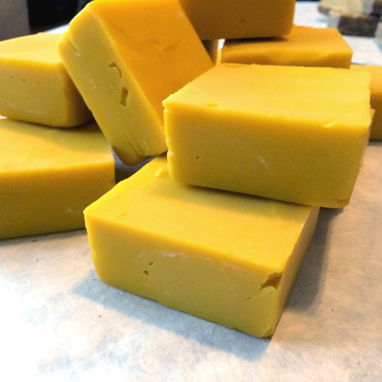
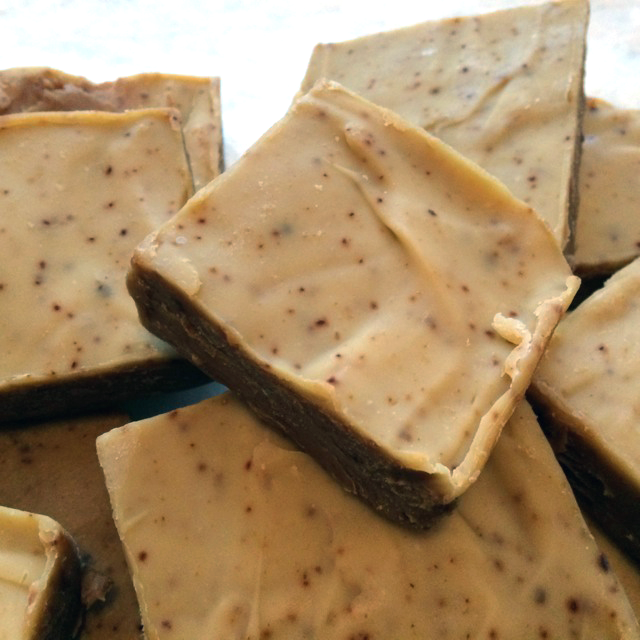
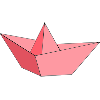

You can find your batch number on the front of your soap's package, and view the list of ingredients below.
- extra virgin olive oil, unrefined organic coconut oil, organic earl gray tea, lye, organic fairly trade shea butter, ground organic walnuts, organic essential oils of lavender and rosewood.
- Extra virgin olive oil, unrefined organic coconut oil, unrefined organic cocoa butter, water, lye, castor oil, and essential oils of ylang ylang and lemongrass.
- Extra virgin olive oil, unrefined organic coconut oil, unrefined organic cocoa butter, lye, castor oil, dried rose petals, and essential oils of rose geranium, and ylang ylang.
- Extra virgin olive oil, unrefined organic coconut oil, water, organic fairly traded red palm oil, lye, castor oil, organic unrefined cocoa butter, and organic essential oils of frankincense, grapefruit, and clary sage.
- Extra virgin olive oil, unrefined organic coconut oil, organic fairly traded red palm oil, lye, castor oil, organic unrefined cocoa butter, and organic essential oils of lavender, atlas cedar, and patchouli.
